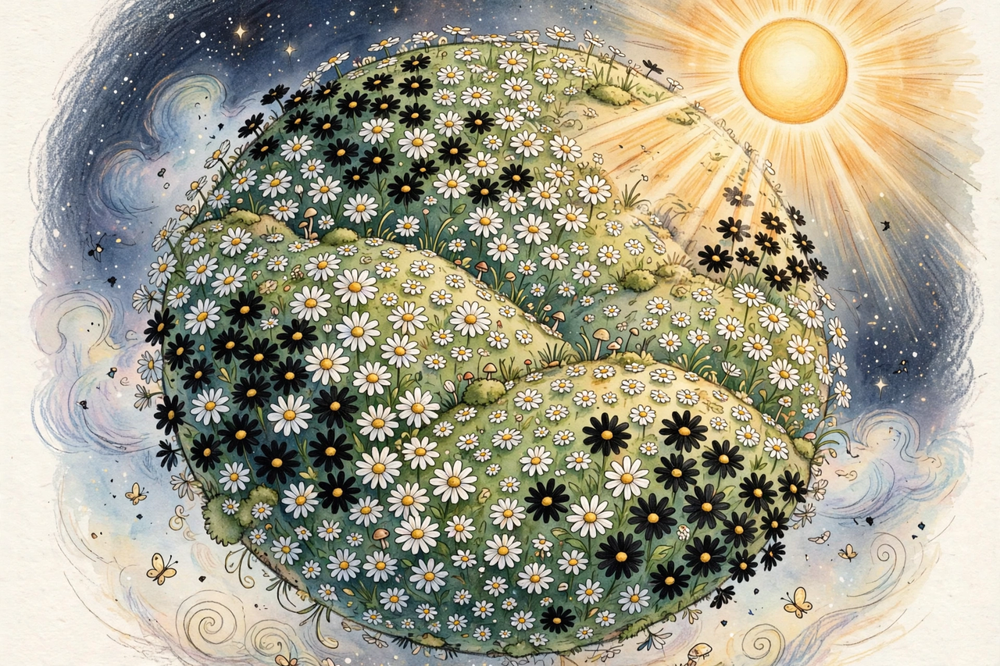

Gaia hypothesis

The Gaia hypothesis, formulated by chemist James Lovelock in the 1970s and developed with microbiologist Lynn Margulis, proposes that living organisms interact with their inorganic surroundings to form a self-regulating system that maintains conditions favourable for life on Earth.
Named after the Greek goddess of the Earth at the suggestion of novelist William Golding, Gaia began as a provocative idea, attracted sharp scientific criticism, and ended by feeding much of its substance into mainstream Earth system science.
The idea
Lovelock conceived Gaia while working on life-detection for Mars missions: Earth's atmosphere, chemically far from equilibrium in a way only life maintains, was itself the giveaway. Feedbacks such as the long-term silicate-weathering thermostat (see {L('Carbon_cycle')}) and marine organisms' effects on clouds were offered as Gaian mechanisms. The simple model Daisyworld — black and white daisies regulating their planet's temperature by their changing coverage — answered critics who claimed self-regulation would require foresight.
Strong versions of Gaia (the Earth as literally an organism, or optimising conditions for life) remain outside science; weaker versions (coupled life–environment feedbacks, some stabilising, some not) are now built into the models of {L('Climate_change')} science.
Reception
Evolutionary biologists objected that natural selection could not tune a planet; geologists countered with evidence for destabilising as well as stabilising feedbacks — snowball Earth episodes among them. Lovelock's later books took a darker turn, warning of a shift to a hotter state inhospitable to the current biosphere. See {L('Biosphere')} and {L('James_Lovelock')}.
See also: Biosphere · James Lovelock · Carbon cycle · Climate change · Ecosystem